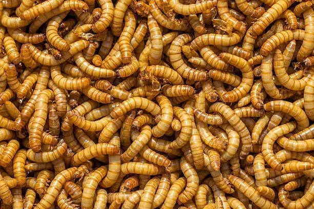

🌱 Solusi Cerdas untuk Pakan Ternak dan Budidaya Maggot
Bantu UMKM maggot berkembang dan temukan kebutuhan pakan ternak ramah lingkungan — dari maggot hidup, telur, hingga perlengkapan budidaya — semuanya ada di sini.
LOGIN

🌱 Solusi Cerdas untuk Pakan Ternak dan Budidaya Maggot
Bantu UMKM maggot berkembang dan temukan kebutuhan pakan ternak ramah lingkungan — dari maggot hidup, telur, hingga perlengkapan budidaya — semuanya ada di sini.
LOGINMaggot dengan kualitas terbaik berdasarkan mitra kita!
Telur Maggot premium yang belum pernah kalian temukan!
Siap membudidayakan Maggot dan Telurnya!